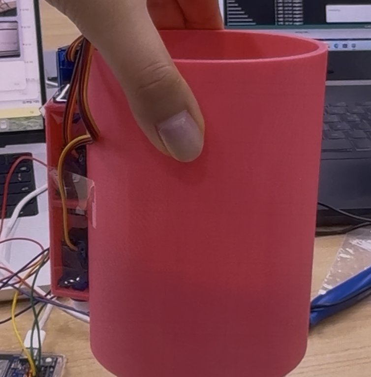

2026 대한민국 우주로버 챌린지
위치 기준점을 직접 설치하는 탐사 로버 — 앵커 투하 메커니즘과 앵커 하우징 설계
Overview
기간2026.07 ~ 2026.10
분류대회
주관우주항공청(KASA)
팀아르케 엠원(Arche_M1) · 지도교수 1명, 학부생 5명
성과23개 팀 중 본선 8팀 진출 · 🏆 임무 부문 우수상 · 경상남도지사상
역할앵커 투하 메커니즘 설계·제작, 앵커 하우징(바요넷) 모델링, 로버 차체 설계·제작(휠 제외)
로버가 주행하면서 UWB 앵커를 지형에 직접 내려놓고, 그 앵커들을 기준점 삼아 IMU와 함께 3차원 위치를 추정하는 시스템입니다. 위치 추정은 팀 작업이고(시뮬레이션 기준 오차 2~7 cm), 이 페이지에는 제가 맡은 앵커 투하 메커니즘과 앵커 하우징을 정리했습니다.
01 · Anchor Drop Mechanism

구조
- 앵커는 원통형 하우징 안에 들어가 있고, 옆면의 서보 기어가 바닥을 받치고 있습니다.
- 서보가 90° 회전하면 받침이 열리고, 앵커는 중력으로 낙하합니다.
왜 이렇게 했나
- 스프링·래치 같은 부품 없이 서보 하나로 끝나서 고장 날 곳이 적습니다.
- 대회 현장에서는 한 번에 확실히 떨어지는 게 정밀한 동작보다 중요했습니다.
- 3D 프린팅 부품만으로 만들 수 있어 수정·재출력이 빨랐습니다.
02 · Small-Angle Bayonet Housing
앵커(UWB 비콘) 하우징의 뚜껑을 약 20°만 돌려서 잠그는 소각도 바요넷으로 설계했습니다. 흔한 90° 쿼터턴 대신 짧은 회전으로 잠기게 해서, 현장에서 빠르게 열고 닫을 수 있습니다.
1삽입러그를 가이드 슬롯 입구에 맞춰 넣기
2약 20° 회전러그가 슬롯을 따라 이동
3러그 걸림걸림면 뒤로 들어가 축 방향 고정
4분리반대로 같은 각도만큼 돌려 빼기
구성
Bayonet Lug(돌출부) · Guide Slot(회전 경로 홈) · Retaining Face(축 방향 이탈을 막는 걸림면) · Stopper(회전 끝 위치 제한)
왜 비콘에 바요넷인가
비콘은 위치 추정의 기준점이라 매번 같은 자리에 정확히 다시 끼워져야 하고, 배터리 교체·점검을 위해 빨리 열려야 합니다. 바요넷은 두 조건을 같이 만족합니다.
신호를 위한 설계
UWB 안테나의 방사 방향을 하우징이 가리지 않게 배치하고, 안테나 주변에 금속 부품을 두지 않았습니다.
현장 내구성
러그–슬롯 유격을 줄여 흔들림을 막고, 주행 진동에 풀리지 않도록 회전 끝에 Stopper를 두었습니다. 3D 프린팅 적층 방향과 러그 두께도 반복 탈착 기준으로 정했습니다.
03 · Tools
Fusion 3603D PrintingServo ActuationUWB
← 프로젝트 목록